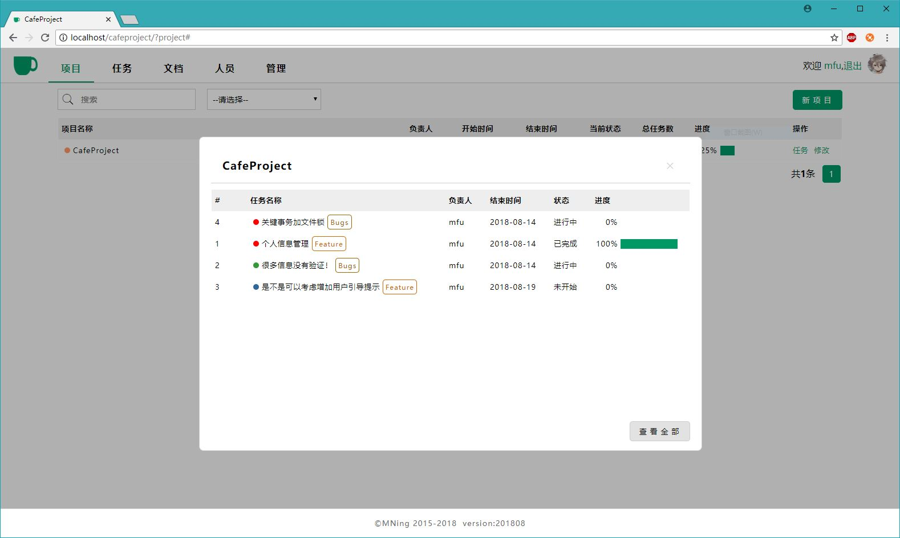
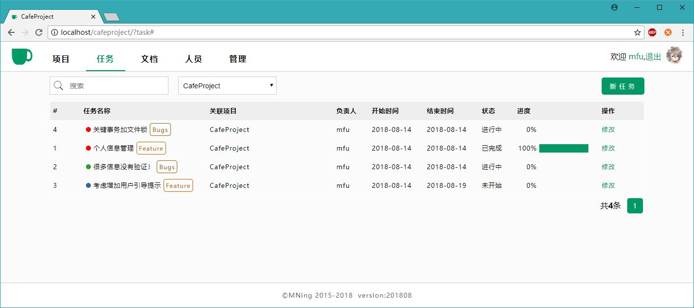

cafeProject-Day9-11-开发中
开发的第11天，把项目和任务模块完成了。整个项目最主要的功能。另外重新设计了个人资料管理模块，对几天前的设计大改了一次。相当于一次大的需求变更吧。自己做项目都有变更，就更别提在公司中干活了。没有需求变更才是奇迹。现在的功能和界面设计，反正我是觉得可以拿出来见人了。不过“好看”还是“不好看”，还真是挺主观的事。没法做到在界面上让每个人都满意。我的目标是让绝大多数人看着都觉得“还行”，就很不容易了。放两张截图：


现在唯一还没做的就只有“文档”功能了。以前打算直接在页面上写Markdown格式文本，之后存数据库里。现在觉得这种方式并不好，将来文档多了数据库就会比较麻烦。于是现在又在琢磨数据库中只存一个索引，然后在本地设置一个文件夹为文档库，所有文档都存在那里面，读取的时候再时时将之转化为HTML页面。各有利弊吧。怎么做好呢？
©Faluo 2018